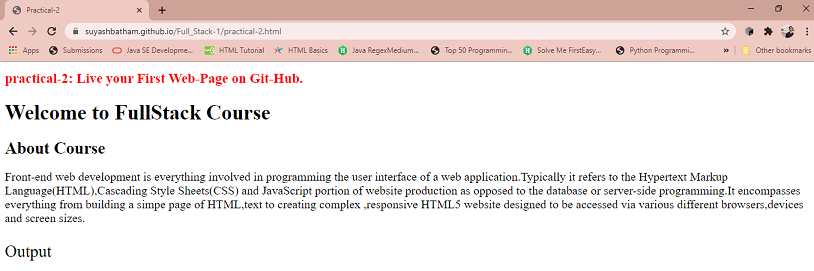

Front-end web development is everything involved in programming the user interface of a web application.Typically it refers to the Hypertext Markup Language(HTML),Cascading Style Sheets(CSS) and JavaScript portion of website production as opposed to the database or server-side programming.It encompasses everything from building a simpe page of HTML,text to creating complex ,responsive HTML5 website designed to be accessed via various different browsers,devices and screen sizes.
Output
Live Page on GitHub
